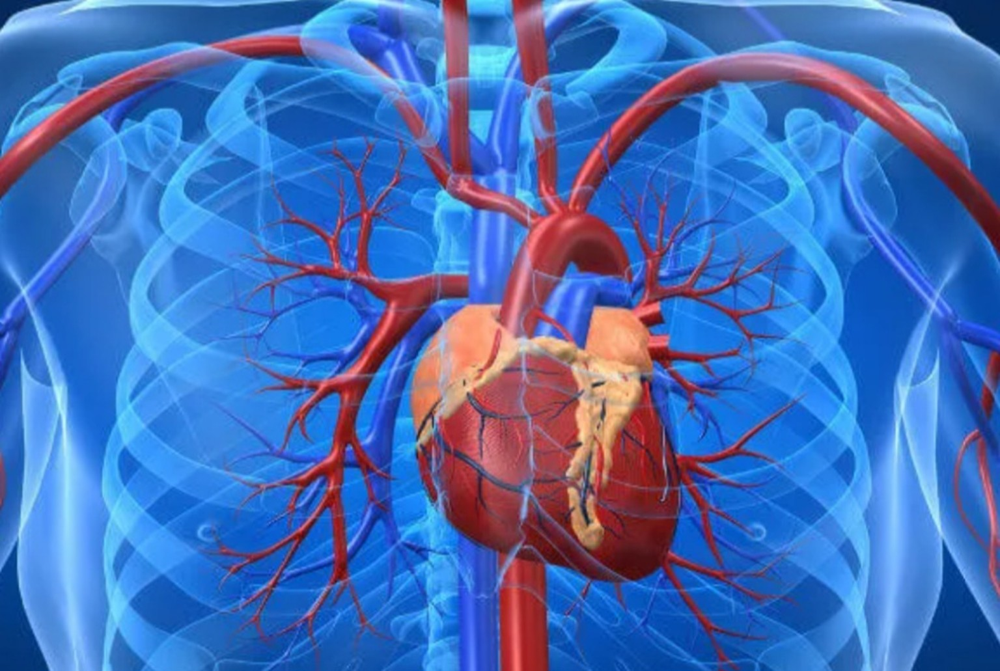
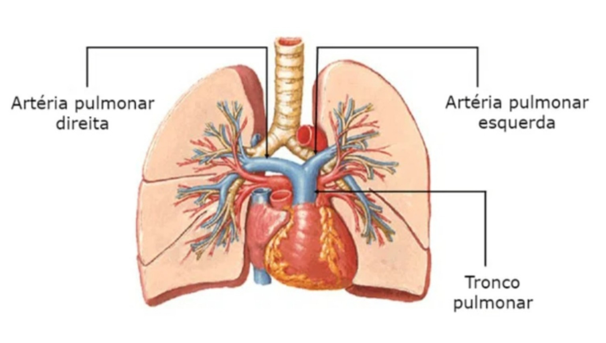
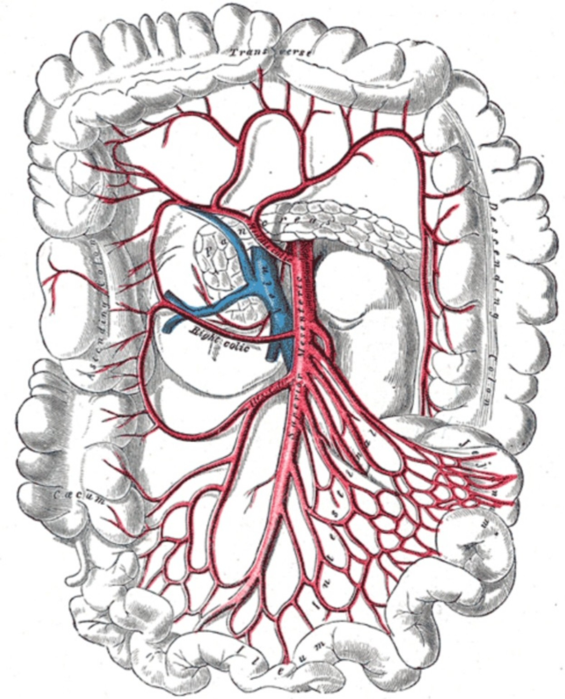
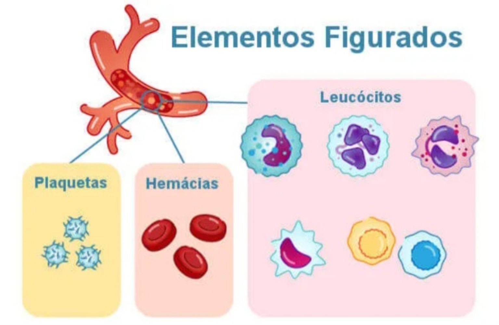
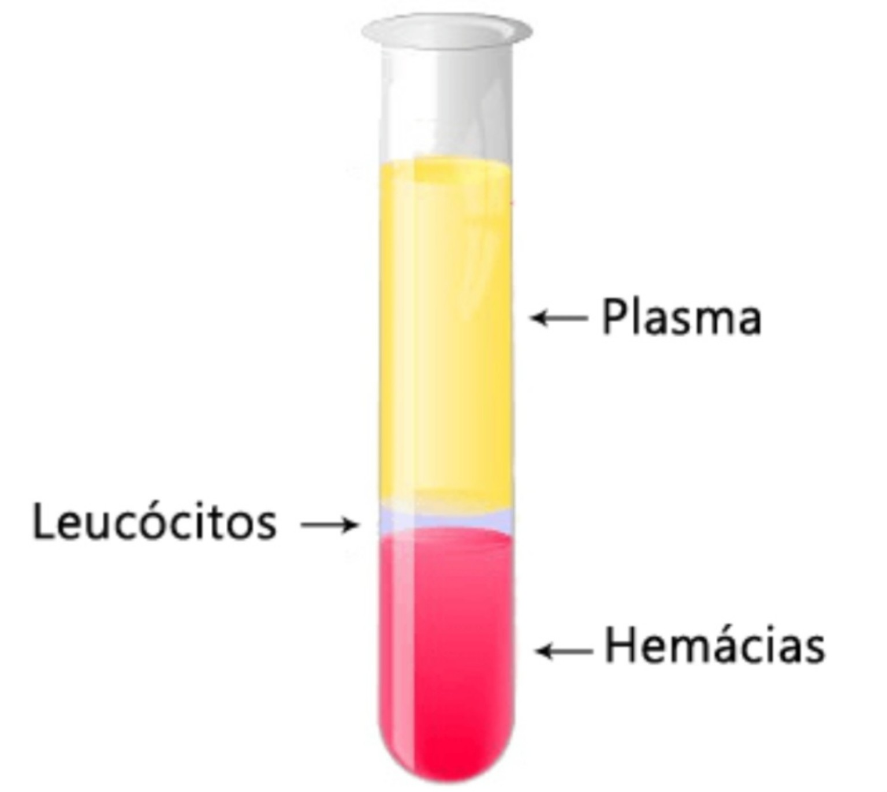
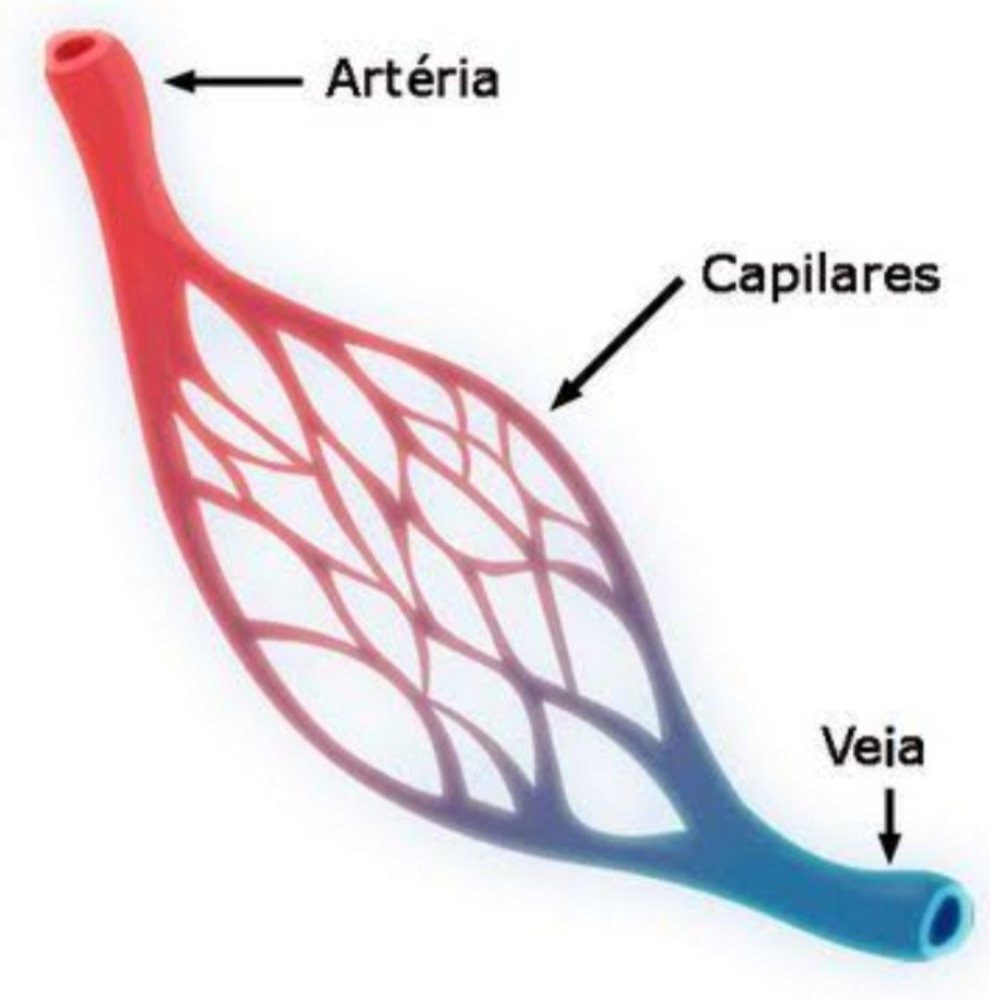
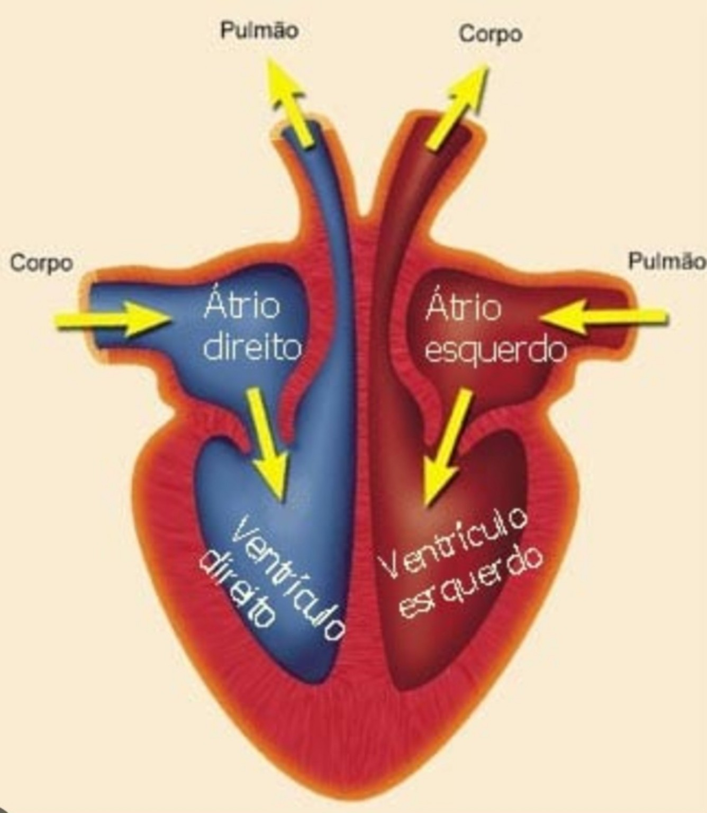

Sistema Cardiovascular
O sistema cardiovascular, também chamado de sistema circulatório, é formado por três partes principais: sangue, vasos sanguíneos e coração.

O sangue é uma mistura de elementos que circula pelo corpo dentro dos vasos sanguíneos. Ele consegue se movimentar graças às batidas do coração. Uma de suas funções é transportar nutrientes, gás oxigênio e outras substâncias importantes. Além disso, o sangue também leva resíduos produzidos pelas células, como o gás carbônico, para que sejam eliminados do corpo.
Durante a digestão, o intestino delgado passa os nutrientes dos alimentos para o sangue, na etapa chamada absorção. Assim, esses nutrientes são levados para todo o corpo. Já o gás oxigênio chega ao sangue nos pulmões, durante a respiração.


Composição do sangue
O sangue é uma mistura formada por uma parte líquida e amarelada, chamada de plasma, e por elementos muito pequenos, que só podem ser vistos com um microscópio.
Entre esses elementos estão as hemácias, os leucócitos e as plaquetas.
- Hemácias: também chamadas de glóbulos vermelhos, possuem uma substância chamada hemoglobina, que dá a cor vermelha ao sangue. A hemoglobina ajuda a transportar o gás oxigênio dos pulmões para as células do corpo.
- Leucócitos: também chamados de glóbulos brancos, ajudam a defender nosso corpo. Eles reconhecem e combatem microrganismos e substâncias que podem causar doenças, protegendo o organismo contra infecções.
- Plaquetas: são pequenos fragmentos de células que ajudam a impedir a perda de sangue. Quando acontece um ferimento, elas se juntam no local e ajudam a formar um coágulo, que diminui ou impede a saída de sangue e ajuda na cicatrização.


Vasos Sanguíneos
Os vasos sanguíneos são canais por onde o sangue circula pelo corpo. Eles chegam a quase todas as partes do organismo, transportando diferentes substâncias.

Os vasos sanguíneos possuem tamanhos diferentes. Alguns são mais grossos e outros são extremamente finos. Os mais finos são chamados de capilares e podem ser ainda mais finos que um fio de cabelo.
Nos desenhos, as artérias costumam aparecer em vermelho e as veias em azul. Mas essas são apenas cores usadas para facilitar o estudo. Na realidade, o sangue é sempre vermelho, podendo ter tons diferentes.
- Artérias: são vasos que levam o sangue do coração para outras partes do corpo. Suas paredes são grossas e resistentes, pois o sangue sai do coração com bastante pressão. A maioria das artérias transporta sangue rico em oxigênio, mas as artérias pulmonares levam sangue com pouco oxigênio até os pulmões.
- Veias: são vasos que levam o sangue de volta ao coração. Suas paredes são mais finas que as das artérias. Muitas veias possuem pequenas válvulas que ajudam a impedir que o sangue volte na direção errada.
- Capilares: são os vasos sanguíneos mais finos. Eles ligam as pequenas ramificações das artérias às pequenas ramificações das veias. É neles que acontecem as trocas de gases, nutrientes e resíduos entre o sangue e as células.
Coração
O coração fica na parte central do peito, um pouco voltado para o lado esquerdo. Ele é formado principalmente por um músculo muito resistente e possui quatro cavidades: átrio direito, átrio esquerdo, ventrículo direito e ventrículo esquerdo.

O coração funciona por meio de movimentos de contração e relaxamento, que produzem os batimentos cardíacos. Quando uma cavidade se contrai, ela empurra o sangue para outra cavidade ou para um vaso sanguíneo. Quando relaxa, ela volta a se encher de sangue.
O sangue percorre dois caminhos que trabalham juntos:
O sangue sai do coração e vai até os pulmões. Lá, ele libera gás carbônico e recebe gás oxigênio. Depois, volta ao coração.
O sangue sai do coração e vai para o restante do corpo. Ele entrega oxigênio e nutrientes às células e recolhe resíduos. Depois, retorna ao coração.
O coração começa a bater por volta da quinta semana de gestação. A partir daí, seus movimentos de contração e relaxamento continuam durante toda a vida.
Curiosidades
Se todos os vasos sanguíneos de uma pessoa adulta fossem esticados, eles teriam cerca de 100 mil quilômetros de comprimento. Isso seria suficiente para dar duas voltas e meia ao redor da Terra!
O coração bate cerca de 100 mil vezes por dia e bombeia aproximadamente 7 mil litros de sangue nesse tempo!
Você sabia? O coração consegue bater sem receber ordens diretas do cérebro! Isso acontece porque ele possui células especiais que produzem os sinais elétricos responsáveis pelos batimentos. Porém, o cérebro ajuda a controlar a velocidade desses batimentos.